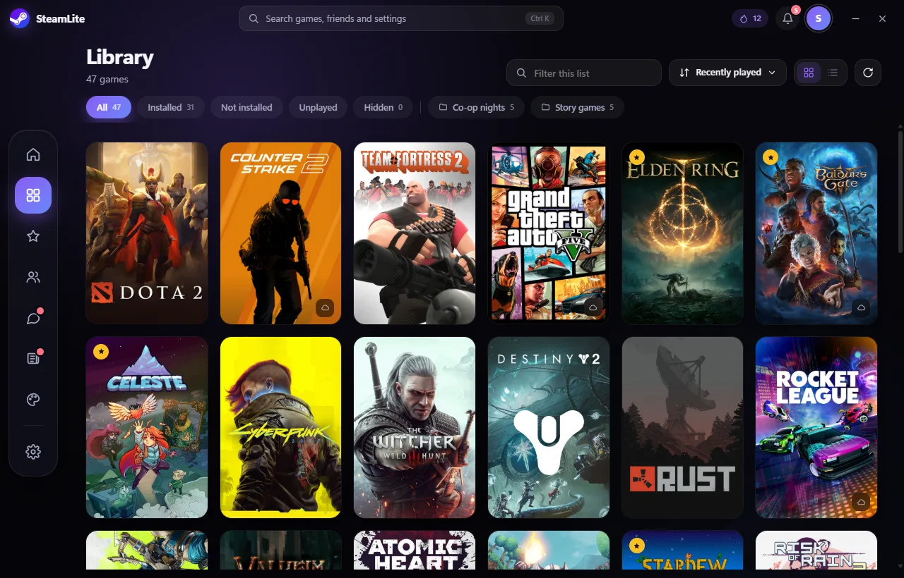
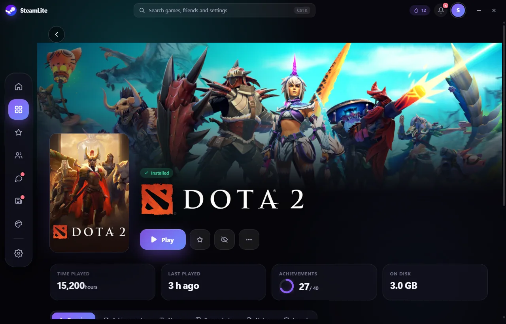
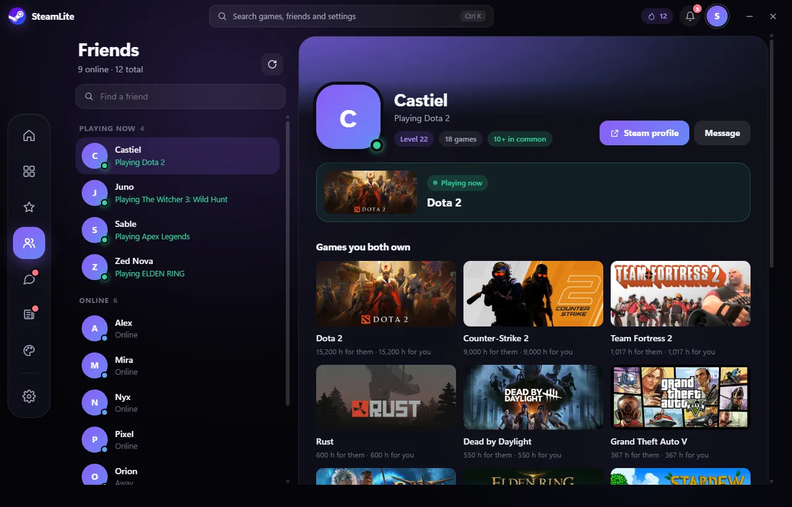
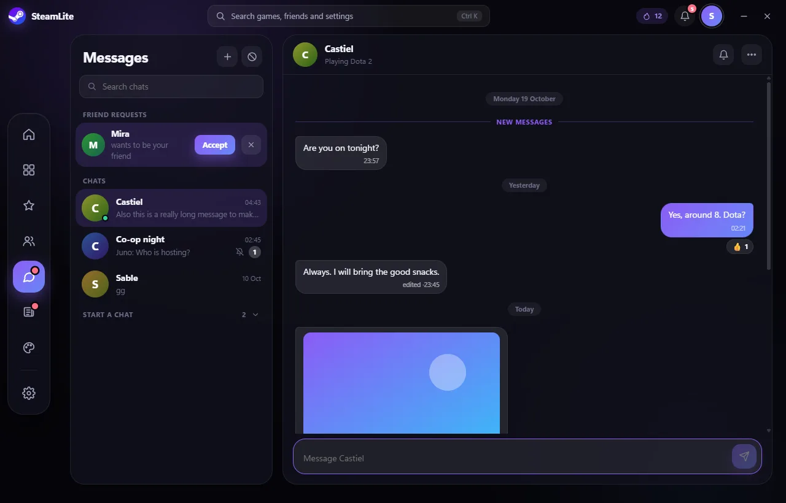
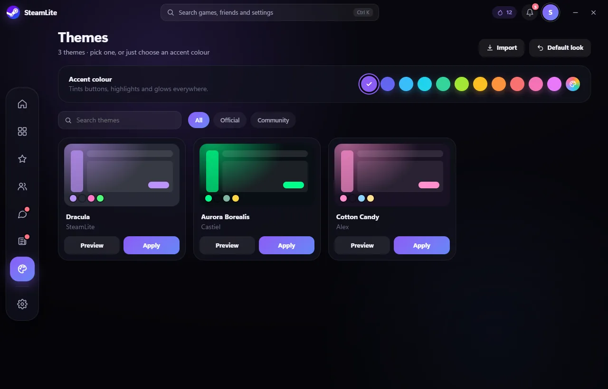
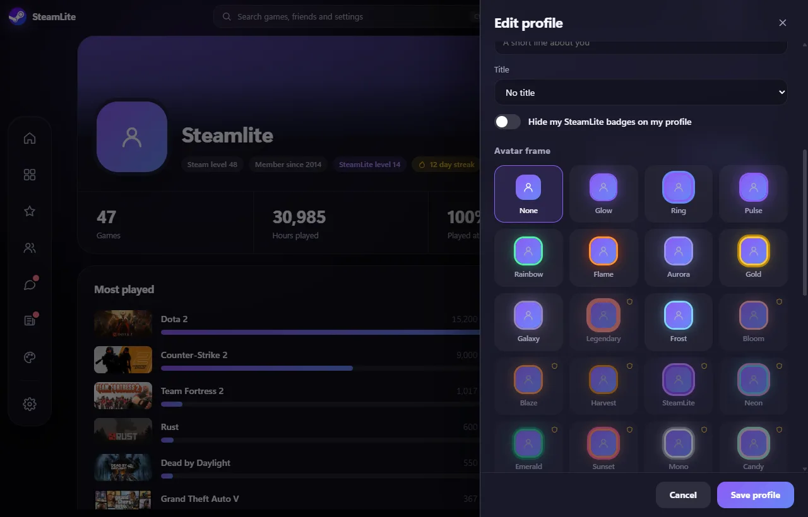
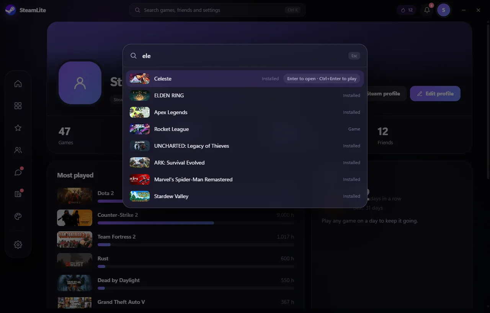

A library that keeps up
Grid or list, collections, search and an A to Z jump. Stays smooth even with thousands of games.
A free desktop companion for Steam. Browse and launch your games, follow achievements and friends, and make it look the way you want, in an app that installs in seconds.

Rebuilt for version 10.1.5 on a lightweight engine, with an interface made to feel smooth.
Grid or list, collections, search and an A to Z jump. Stays smooth even with thousands of games.
Play time, achievements, news, screenshots, notes and launch options in one place.
See who is online or playing, then chat with them, with photos, GIFs and notifications. Block and unblock when you need to.
Press Ctrl K to find a game, friend or setting and play from the keyboard.
More than 80 themes or any accent colour, plus a profile with banner, avatar frame, title and showcase games.
Built on Tauri instead of Electron: a small installer and a quick start.
Screenshots of SteamLite, shown with sample data.
Every game you own, with filters, collections and instant search.
Stats, achievements, news and notes, with cover art that morphs into the hero.
Profiles, status and the games you have in common.
Chat with friends, reply and react, share photos and GIFs, and get notified. It syncs with your phone.
Try a theme before you apply it, or just pick an accent.
Banner, avatar frames, titles and showcase games.
One shortcut to anything in the app.






SteamLite is free. You need Steam installed and a free Steam Web API key to connect your account.
Installing over an existing SteamLite keeps your settings. Updates come through the built-in SteamLite Updater.
An Android companion app and a separate Messages app, both free on GitHub.
Drops, the shop, the trophy room, events, wishlist and sales, inventory and the tools hub are not in 10.1.5 yet and will return in the new design.
Yes.
Yes, a free one. You can get it from Steam's website and paste it in when you sign in. It stays on your PC.
No. SteamLite is an independent project and is not made or endorsed by Valve. Steam is a trademark of Valve Corporation.
It installs over your existing SteamLite and keeps your settings. It does not include drops, the shop, the trophy room, events, wishlist and sales, inventory or the tools hub yet. If you rely on those, you can download 9.4.1 from the releases page and skip the update.
Open an issue on the GitHub page.